Haptische Hinderniswarnung für unterwegs
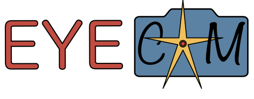
Das auf Brusthöhe montierte Raspberry Pi Camera Module 3 erkennt Hindernisse in der Umgebung und sendet Signale an zwei Armbänder, um Nutzenden die Ausweichrichtung anzuzeigen (links oder rechts). Die Kamera ist mit einem Raspberry Pi verbunden, auf dem die Bildverarbeitung durchgeführt wird. Für die Armbänder werden ESP32-C3 Super Mini in Kombination mit Vibrationsmotoren verwendet, um haptisches Feedback zu erzeugen. Zusätzlich wird ein Time-of-Flight (ToF) Sensor eingesetzt, um die Schwächen einer reinen bildbasierten Objekterkennung auszugleichen. Das KI-Modell YOLOv26 von Ultralytics wird zur Hindernisserkennung verwendet.
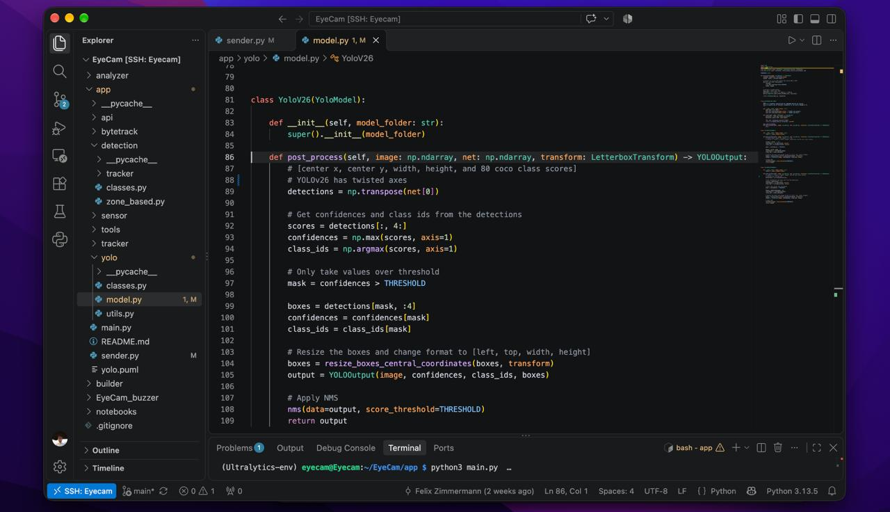
Funktionsweise des Systems
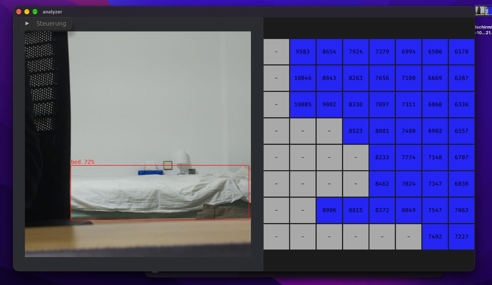
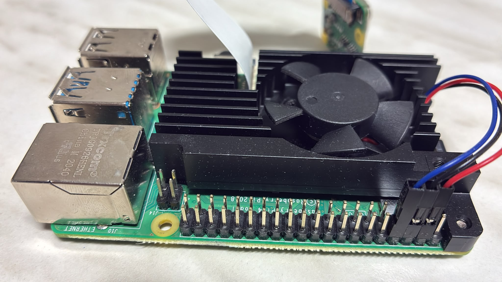
Erkennen
Eine am Körper getragene Kamera erfasst laufend die Umgebung und erkennt Hindernisse per Bildverarbeitung.
Senden
Sobald ein Hindernis erkannt wird, sendet das Gerät ein Signal per Bluetooth Low Energy (BLE) an eines von zwei Armbändern — je nachdem, auf welche Seite ausgewichen werden soll.
Spüren
Das Armband gibt eine haptische Rückmeldung (Vibration), die anzeigt, ob ein paar Schritte nach links oder rechts ausgewichen werden soll.
Warum dieses Projekt?
Laut WHO haben weltweit mindestens 2,2 Milliarden Menschen eine Seheinschränkung. Hilfsmittel, die sie im Alltag unterstützen, sind oft sehr teuer: Je nach System liegen die Kosten schätzungsweise zwischen 1.000 und 10.000 €. Genau hier setzt EyeCam an. Das System ist klein, alltagstauglich und deutlich günstiger, sodass es für viele Menschen erschwinglich wird.
Auf einen Blick
| Mikrocontroller | 2x ESP32-C3 Super Mini |
|---|---|
| Kamera/Recheneinheit | Raspberry Pi 5 mit Cam Module 3 |
| Kommunikation | Bluetooth Low Energy (BLE) |
| Feedback | Haptisch (Vibrationsmotor) |
| Status | Fertiger Prototyp |
Wer wir sind
Wir sind Informatik-Auszubildende des Universitätsklinikums Freiburg in den Bereichen Systemintegration und Anwendungsentwicklung.
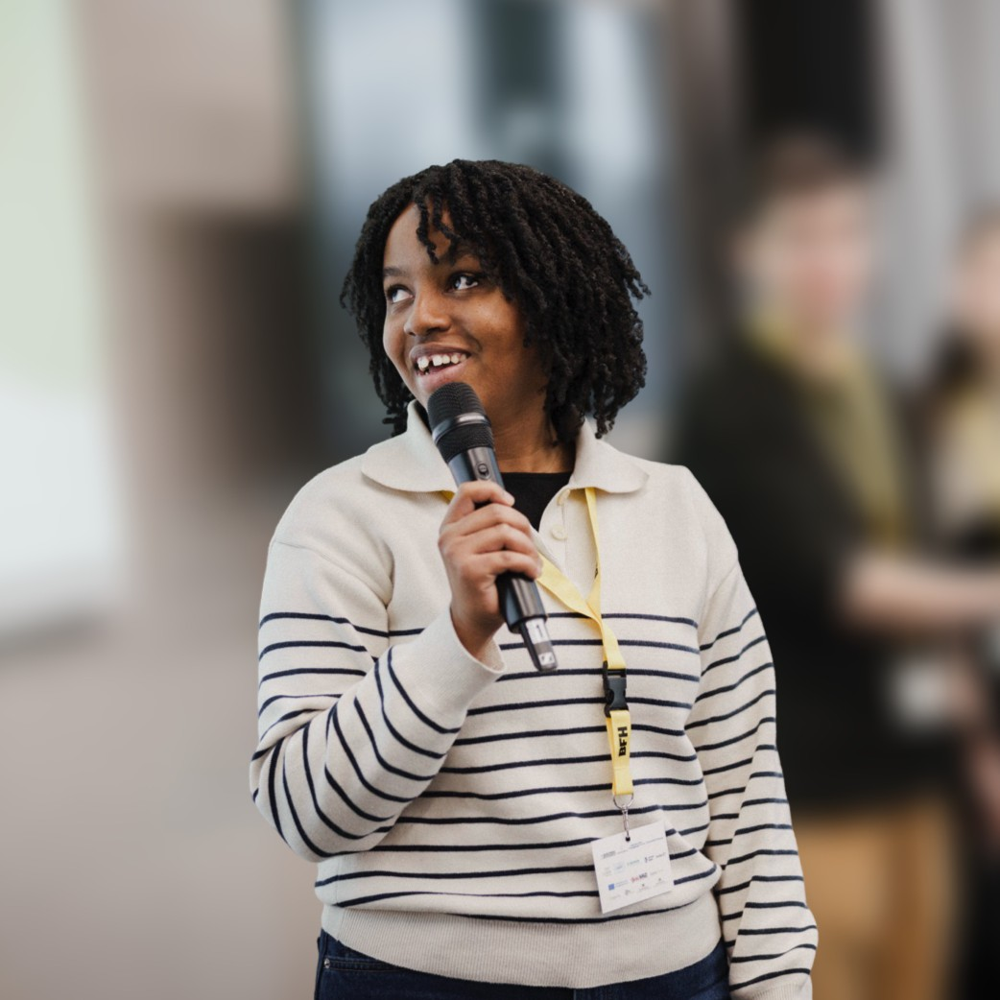
Bonheur Rebayesu

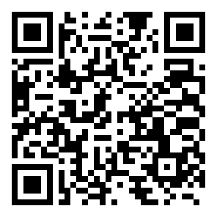
Felix Zimmerman
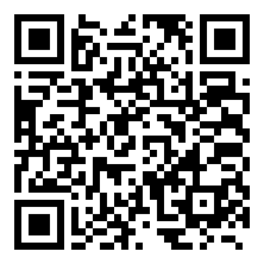

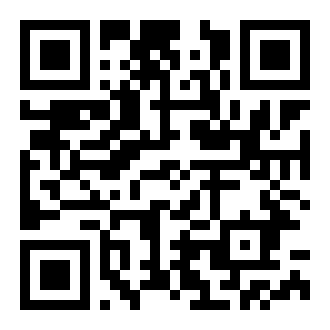
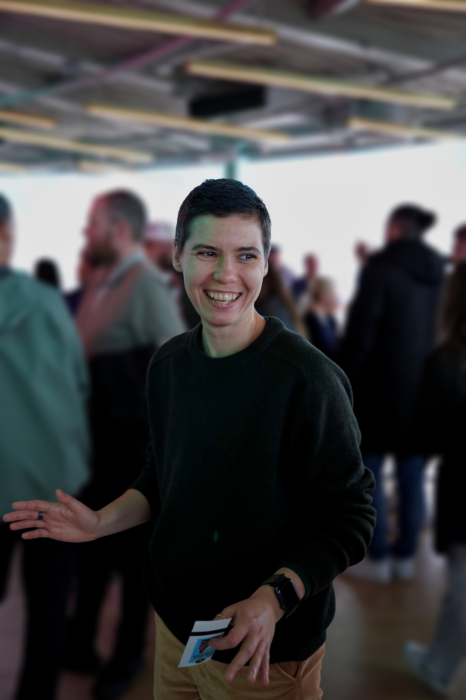
Anna Piven
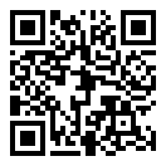
Danksagung
Wir danken unseren Ausbilder*innen und Lehrkräften für ihre fachliche Begleitung, den Erfahrungsaustausch, die Unterstützung mit Material und das Vertrauen in unser Projekt. Der Walther-Rathenau-Gewerbeschule danken wir für die Gelegenheit, EyeCam auf der Hausmesse präsentieren zu dürfen.
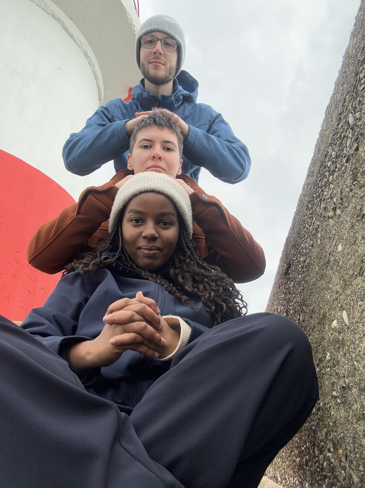